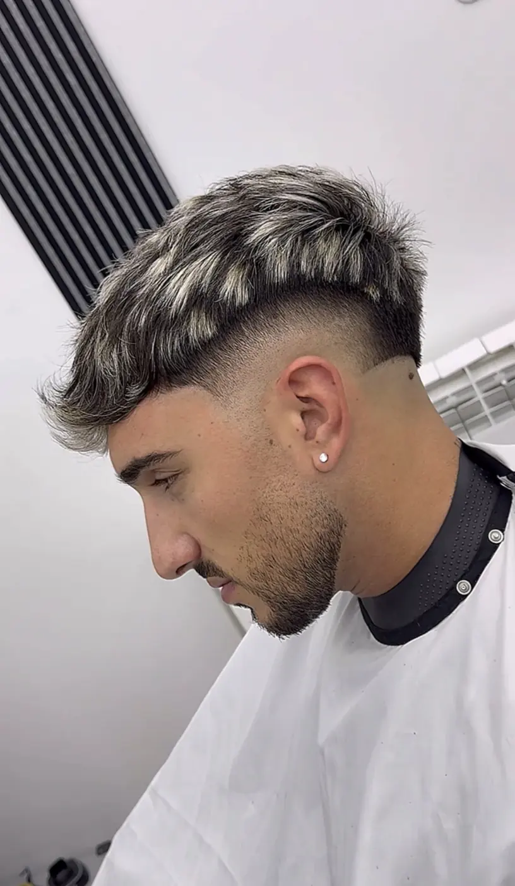
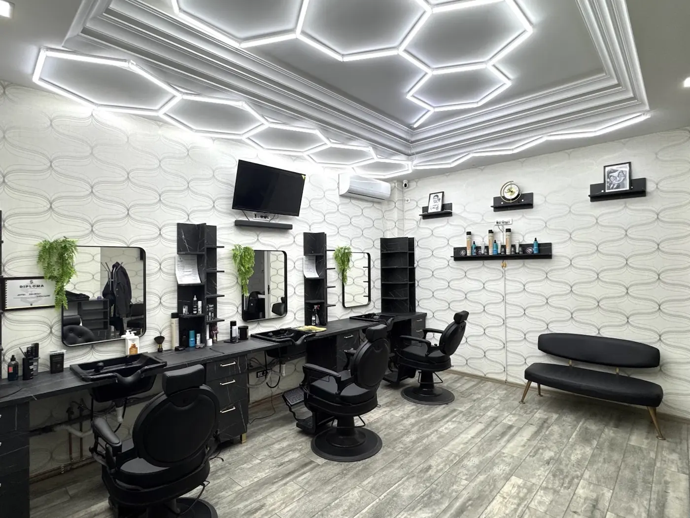
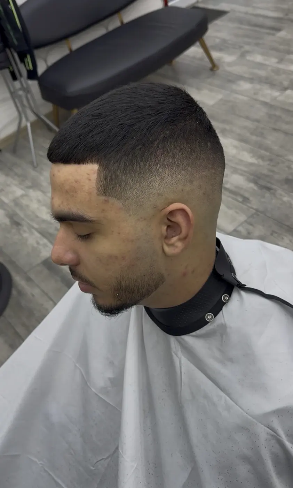
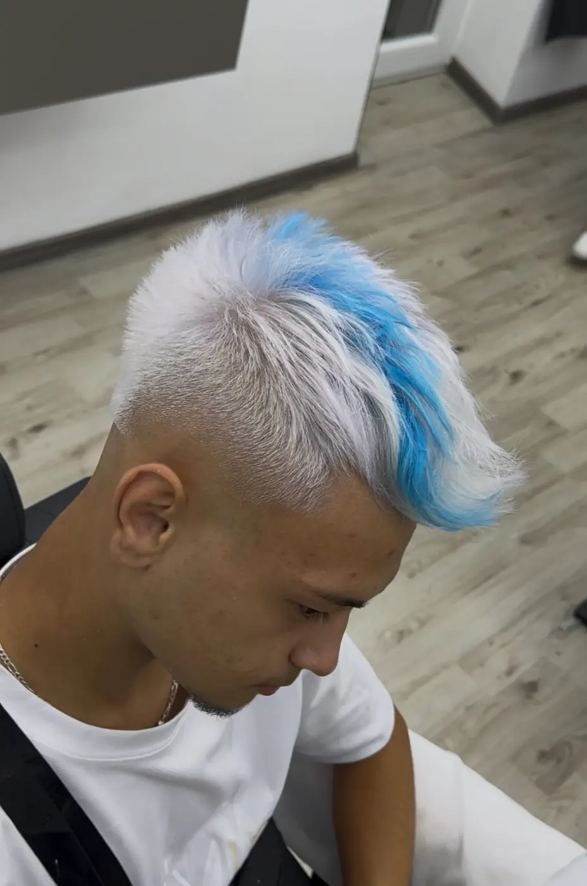
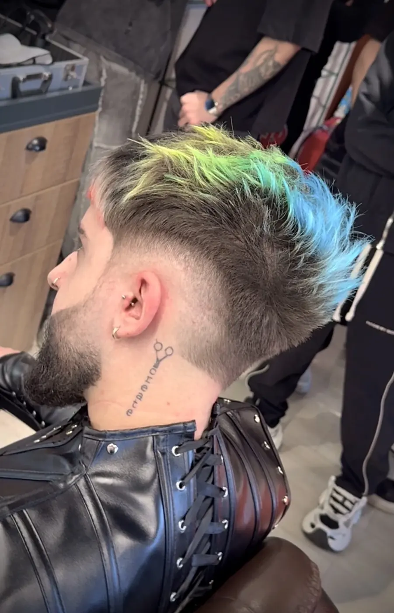
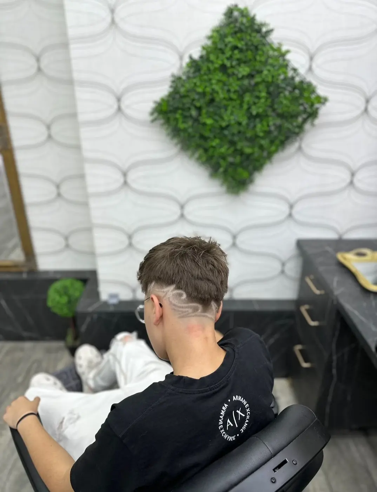
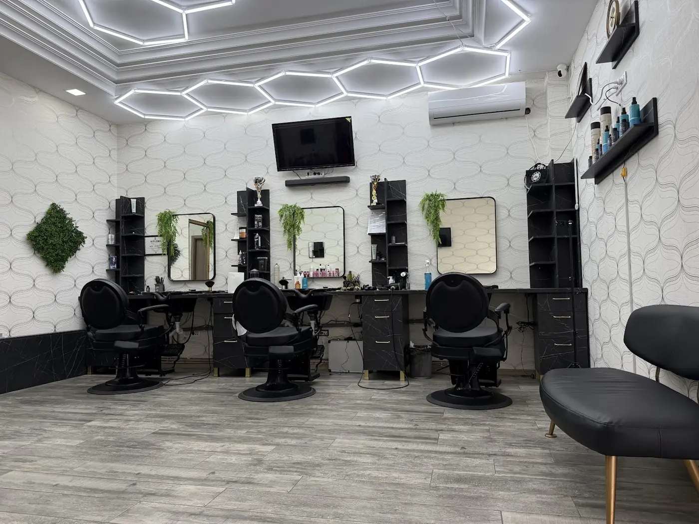

{{Tuns|Haircut|Corte}}
{{Tuns de bărbați, cu textură deasupra.|Men’s cut, textured on top.|Corte masculino, com textura no topo.}}
{{preț: de confirmat|price: to be confirmed|preço: a confirmar}}{{Sună la Dynamite:|Call Dynamite:|Ligue para a Dynamite:}} 0741 252 952

{{Aleea Mihail Sadoveanu 4. Tuns, fade și culoare. Alegi serviciul, ziua și ora, iar noi ți le confirmăm.|Aleea Mihail Sadoveanu 4. Cuts, fades and colour. Pick the service, day and time, and we confirm it.|Aleea Mihail Sadoveanu 4. Cortes, fades e cor. Escolha o serviço, o dia e a hora, e nós confirmamos.}}
{{Trei servicii pe care le vezi în lucrările din salon. Prețurile le confirmăm la telefon.|Three services you can see in the shop’s work. Prices are confirmed by phone.|Três serviços que se veem nos trabalhos do salão. Os preços confirmam-se por telefone.}}

{{Tuns de bărbați, cu textură deasupra.|Men’s cut, textured on top.|Corte masculino, com textura no topo.}}
{{preț: de confirmat|price: to be confirmed|preço: a confirmar}}
{{Tranziție curată de la piele la lungime, făcută cu mașina.|A clean blend from skin to length, done with the clippers.|Transição limpa da pele ao comprimento, feita com a máquina.}}
{{preț: de confirmat|price: to be confirmed|preço: a confirmar}}
{{De la albastru electric la curcubeu, cum se vede în galerie.|From electric blue to rainbow, as in the gallery.|Do azul elétrico ao arco-íris, como se vê na galeria.}}
{{preț: de confirmat|price: to be confirmed|preço: a confirmar}}{{Barbă, contur și alte servicii: de confirmat. Întreabă la telefon.|Beard, line-ups and other services: to be confirmed. Ask by phone.|Barba, contornos e outros serviços: a confirmar. Pergunte por telefone.}}
{{de confirmat|to be confirmed|a confirmar}}


{{Un client e foarte mulțumit de tunsoare: personal profesionist, atent la detalii, atmosferă plăcută.|One client is very happy with the cut: professional staff, attention to detail, pleasant atmosphere.|Um cliente está muito satisfeito com o corte: equipa profissional, atenta ao detalhe, ambiente agradável.}}{{sensul general al recenziilor publice|the general sense of public reviews|o sentido geral das avaliações públicas}}
{{Altul descrie băieții ca relaxați și atenți, care lucrează foarte bine.|Another describes the barbers as relaxed and attentive, and says they work very well.|Outro descreve os barbeiros como descontraídos e atentos, e diz que trabalham muito bem.}}{{sensul general al recenziilor publice|the general sense of public reviews|o sentido geral das avaliações públicas}}
{{O altă recenzie vorbește despre servicii excelente, personal profesionist și atmosferă plăcută.|A further review mentions excellent service, professional staff and a pleasant atmosphere.|Outra avaliação fala de serviços excelentes, equipa profissional e ambiente agradável.}}{{sensul general al recenziilor publice|the general sense of public reviews|o sentido geral das avaliações públicas}}
{{Alegi serviciul, ziua și ora. Cererea pleacă pe WhatsApp sau SMS, iar frizeria îți confirmă locul pe scaun.|Pick the service, day and time. The request goes out by WhatsApp or SMS and the shop confirms your chair.|Escolha o serviço, o dia e a hora. O pedido sai por WhatsApp ou SMS e a barbearia confirma o seu lugar.}}
{{Harta se încarcă doar când o ceri.|The map only loads when you ask.|O mapa só carrega quando pedir.}}